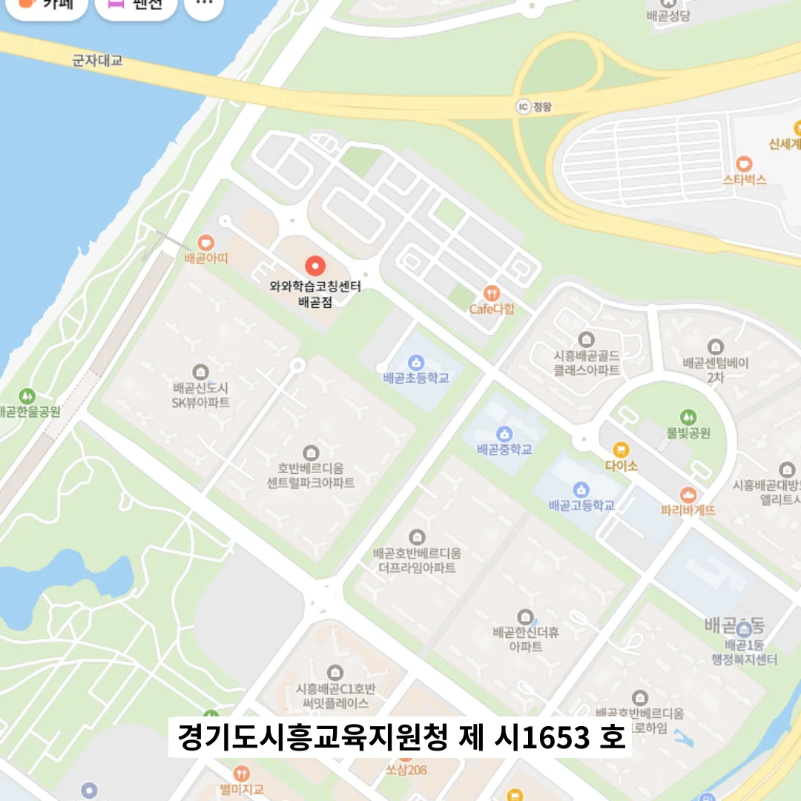

배곧 중3 내신학원
배곧 중3 내신학원
마지막으로 문장 내부의 논리를 의도적으로 뒤틀어 역진형 구조를 활용하면 학습자에게 긴장감을 유지시키면서도 복합적 사고를 훈련시킬 수 있다; 이러한 접근은 시험 상황에서 예상치 못한 문제 유형에 대한 적응력을 향상시킨다. 삼각함수의 그래프처럼 시각적으로 복잡해 보이는 개념도, 수식 뒤에 감춰진 주기성과 진폭의 감각을 체감하려 노력할 때 비로소 내 것이 된다. 중요한 개념은 포스트잇으로 책상 위나 교과서에 눈에 띄게 붙여두어 시각적 자극을 통해 반복 노출되도록 하며, 이는 무의식적 암기 효과를 높인다. 디지털 스크린을 항상 준비해두고 시각 자료를 수업 중 실시간으로 연결하는 방식은 딸이 도형 문제를 보다 직관적으로 이해할 수 있도록 돕는 중요한 전략이다. 오답 수정 이력 시트를 작성하면서, 단순히 정답을 옮기는 것을 넘어 오답의 원인을 분류하고 통계적으로 분석하면, 반복되는 실수 유형을 사전에 예방할 수 있다. 예를 들어, “오늘 학교에서 돌아오는 길에 아빠가 사주신 빨간 풍선을 잃어버린 아이”라는 긴 문장을 처음에는 “아이가 풍선을 잃어버렸다”로 단순화하고, 차츰 정보를 추가하며 아이가 기억을 복원하도록 유도하는 것이다.